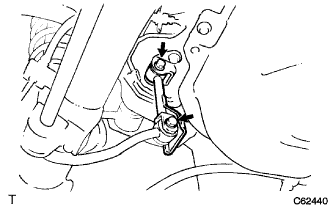

リヤスタビライザ バーSUB-ASSY（4WD） 取り外し
印刷
□ 参 考 □
構成図は
参照
1. リヤスタビライザ リンクSUB-ASSY取りはずし
ボルト2本をはずし、スタビライザリンクLHを取りはずす。

ボルト2本をはずし、スタビライザリンクRHを取りはずす。
2. リヤスタビライザバー ブラケット NO.2取りはずし
ボルト2本をはずし、スタビライザバーブラケット2個を取りはずす。
3. リヤスタビライザ バーSUB-ASSY取りはずし
4. リヤ スタビライザ ブシュ取りはずし
 参照参照
参照参照